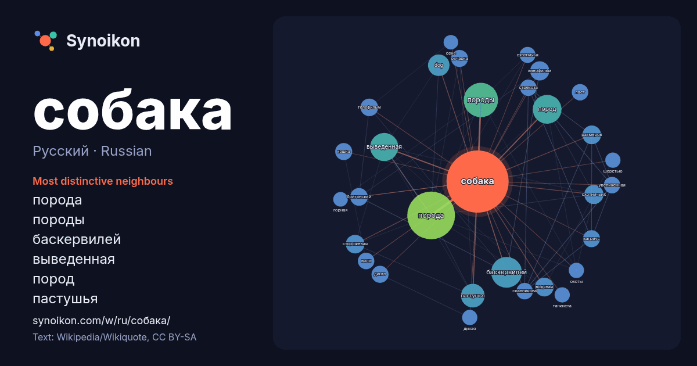

Русский · Russian · popular word
собака
“dog” · The words found around it in 1368 instances from Russian Wikipedia, Wikiquote.

Most distinctive neighbours
- порода 111×
- породы 52×
- баскервилей 50×
- выведенная 42×
- пород 37×
- пастушья 30×
- dog 24×
- охотничьих 20×
- сторожевая 19×
- кинофильм 19×
- водяная 18×
- телефильм 17×
- размеров 16×
- динго 16×
- овчарка 16×
- вагриус 16×
- кошка 15×
- лает 15×
- славникова 15×
- стрекоза 15×
× = how many times more often than in general Russian Wikipedia text.
Most frequent neighbours
- порода 118
- породы 61
- баскервилей 49
- пород 43
- выведенная 41
- пастушья 29
- dog 24
- название 23
- кинофильм 19
- одна 19
- охотничьих 19
- водяная 18
- размеров 18
- сторожевая 18
- британский 16
- телефильм 16
- вагриус 15
- динго 15
- журнал 15
- используется 15
In context
- Самое́дская соба́ка (самое́д, самое́дский шпиц, са́мми) — одна из древнейших пород собак, которая относится к примитивным (аборигенным) породам. Происходит Wikipedia snippets · Самоедская собака
- — 576 с. — ISBN 5-278-00259-Х. Енотовидная собака — животное средних размеров, величиной с небольшую собаку. Общая длина 65—80 см, из них хвост составляет Wikipedia snippets · Енотовидная собака
- То́го (англ. Togo) — сибирский хаски, являвшийся ведущей собакой в упряжке Леонарда Сеппалы во время Великой гонки милосердия 1925 года. Назван в честь Wikipedia snippets · Того (собака)
- «Собаки» Собака: Собака — домашнее животное из семейства псовых. «Собака» — картина Франсиско Гойи. Собака — одно из названий символа @. Собака (собачья вахта) — Wikipedia snippets · Собака (значения)
- охотничьих пород собак. Гончие предназначены для охоты гоном, работают в стае, в смычке (своре) или в одиночку. Найдя след зверя, собака должна преследовать Wikipedia snippets · Охотничьи собаки
- ноября 2021) Беспоро́дная соба́ка (дворня́га, дворня́жка) — собака, не имеющая принадлежности к определённой породе собак. Учёные применяют также термин Wikipedia snippets · Беспородная собака
- «холодная собака», по некоторым версиям, происходит от названия в немецком языке рудничных вагонеток Hunt, созвучного слову Hund — «собака», так как для Wikipedia snippets · Холодная собака
- пространствах, собак пускали для преследования удалённого зверя («в угон»), применяли их преимущественно в одиночку. Для такой охоты собака должна быть способна: Wikipedia snippets · Борзые собаки
More Russian words
- бог
- власть
- вода
- деньги
- жизнь
- здоровье
- золото
- искусство
- истина
- история
- климат
- кошка
- мост
- наука
- пища
- поезд
- природа
- работа
- семья
- сердце
- смерть
- язык
Precomputed on 2026-10-09 with default settings (±5 words, medium corpus). The interactive map can refresh it with live data.